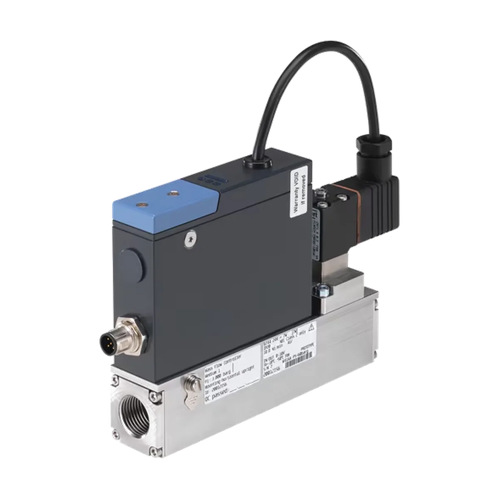

Regulacja przepływu
Masowe regulatory przepływu MFC/MFM Bürkert
Masowe regulatory i mierniki przepływu Bürkert do dokładnego dozowania oraz regulacji przepływu gazów i cieczy.

Najważniejsze zastosowania i cechy
Serwokontrol pomaga w doborze produktów Bürkert do konkretnych warunków pracy: medium, ciśnienia, temperatury, zakresu przepływu, przyłącza, materiału wykonania oraz sposobu sterowania.
- Precyzyjna regulacja i pomiar przepływu masowego
- Rozwiązania MFC i MFM
- Dobór pod gaz, zakres przepływu i komunikację